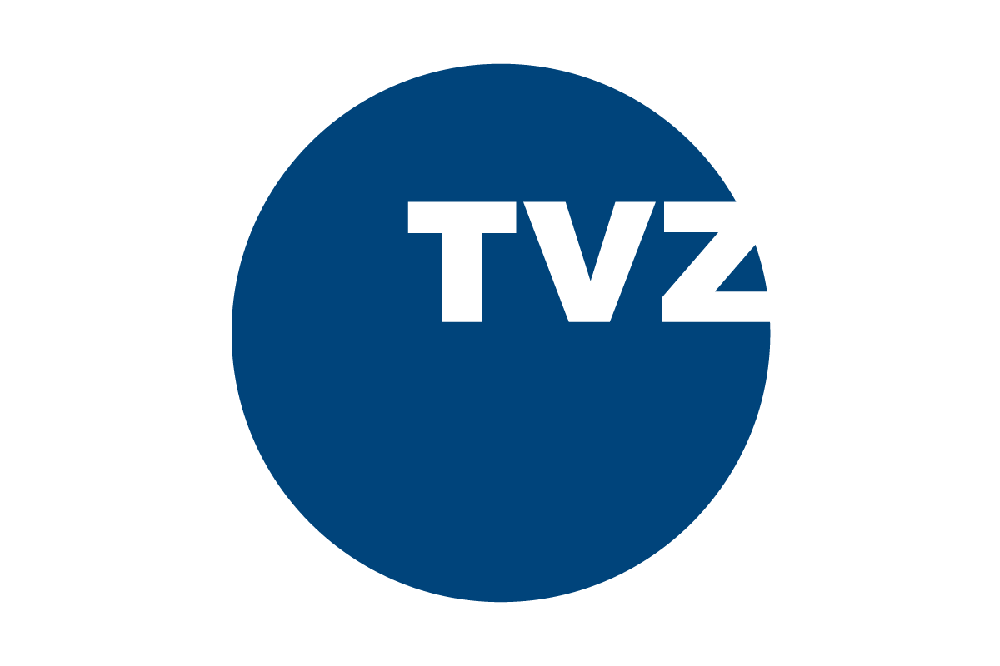

TVZ - Događaji
Studijski programi
Akademski programi
Studijski programi
Novosti
Događaji
Zadnji događaji
Zaposlenik i studenti TVZ-a sudjelovali na ovogodišnjem izdanju WRC Croatia rally 2023
Izložba Vilko Žiljak - 50 godina kompjutorske grafike